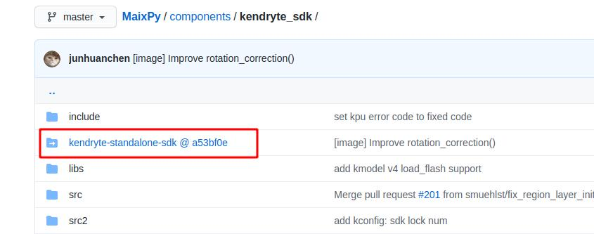

git 和 github 介绍
因为在学习 MaixPy 的过程中， 有很多地方用到 git 和 github， 所以这里简单解释一下它们是什么，以及区别是什么。
1. 什么是 git
git 是一款 代码托管 软件， 用来管理代码的版本。 比如： 我今天改了代码， 然后明天也改了代码， 以后我都能看到这两次改动历史， 以及改了什么内容，可以精确到哪一行，方便后面找问题; 或者我发现第二次提交的代码出现了问题， 我需要回到第一次提交后的版本， 都可以用这个工具实现; 另外方便多个人修改同一份代码，能管理大家提交的代码，不容易出现混乱。
再也不用拷贝无数个文件夹来备份修改了！
git 会在目录下创建一个.git隐藏文件夹， 所有更改记录保存在这里面，不能删除这个文件夹。
但是需要注意的是， 现在的 git 主要用来管理文本文件， 不适用拿来管理二进制文件，比如图片 PDF等等， 会让文件夹占用的空间变得很大。
2. 什么是 github
github 是一个 分享代码 的 网站。
可以在这个网站上注册， 然后建立仓库（repository），往这个仓库里面放代码公开分享，让更多地人来使用， 甚至一起修改，一起优化代码， 这就是开源。
每个仓库都是可以单独地使用 git 这个软件来管理的， 大家在自己的电脑上修改代码， 然后使用git提交， 然后使用git推送到github这个网站， 大家就可以看到新的内容了。
MaixPy 的源码的地址是： https://github.com/sipeed/maixpy , 也就是一个 git 仓库。
另外，国内也有几家不过的类似github的网站， 比如gitee
3. git 和 github 的区别
一个是一个软件， 一个是一个网站。 只不过这个网站用到了 git 这个技术来管理仓库。
4. 为什么我无法访问 github， 或者访问速度很慢
github 是国外的网站， 因为距离远，线路问题导致某些运营商的某些线路可能访问慢甚至无法访问，
比如 github 用来存放源文件的域名 https://raw.githubusercontent.com/ 可能无法访问
解决方法：
- 换个线路， 也就是换个网络， 比如你用电信网， 可以换移动或者联通试试， 换手机流量，或者换个地方等方法
- 使用 VPN 类软件，这里不教，请注意合法使用
5. 什么是 star
在 github 上， 每个公开的仓库大家都可以去点赞收藏，也就是 star，在 github 右上角 ⭐ 形状的按钮
 如果你觉得项目不错，请给个 star，这样会鼓励开发者花更多时间维护仓库，同时也告诉第一次来的访问者这是个不错的项目，值得关注。
如果你觉得项目不错，请给个 star，这样会鼓励开发者花更多时间维护仓库，同时也告诉第一次来的访问者这是个不错的项目，值得关注。
star 后， 可以在个人资料里面找到自己的 star 仓库，方便下一次找到
说到这里，大家觉得 MaixPy 不错的话，可以 star 一个哦～
6. 什么是 Master 分支
在每个仓库中， 可以存在很多个分支，不同分支可以有不同的代码，而且不同的分支之间还可以互相合并，方便保存代码的不同版本，以及方便团队合作， master 分支就是指主分支，也就是最重要的分支，通常仓库默认展示的就是 master 分支。
7. 什么是提交
提交，英文叫commit， 就是每次更改仓库的代码， 都提交一次，就会被记录到提交历史记录里面，后面随时都可以看这次提交了什么内容，也可以将代码回滚到这次提交
每个提交都有一个独立的commit ID， 比如d28cb7ac7db5ad61c0738df95d733717deefda1d， 简写成d28cb7a
8. 什么是子模块
子模块， 英文叫submodule， 就是在仓库中可以引用其它仓库，相当于是一个软链接， 不需要在仓库放实际的代码， 只需要放一个链接即可。
这样的好处是多个仓库可以分开管理， 比如仓库1引用了仓库2作为子模块， 如果仓库2代码更新了， 仓库1可以选择继续使用旧版的仓库2的代码， 也可以选择使用仓库2最新的代码，只是更新一下子模块链接
比如MaixPy用了kendryte-standalone-sdk作为子模块,看这里

{kind=link}
可以看到这里文件夹的图标不太一样，它只是一个链接，点击就会跳到相应的仓库而不是直接打开文件夹
所以 MaixPy 使用了子模块
9. 什么是克隆
在github上面的仓库，如果需要下载到本地来， 就需要使用克隆， 使用
git clone 地址
就可以吧仓库克隆到本地了， 克隆的本地的仓库名副其实就是 github 上面的一份克隆， 完全一样，也保留了历史记录等
当然也可以不用克隆，网页有点击下载的按钮，但是下载的缺陷就是不会包含提交代码的历史记录，根据自己的情况选择
需要注意的是， 在克隆包含有子模块的仓库时， 因为克隆默认只会将子模块的链接克隆下来， 子模块的代码没有克隆到本地， 你需要这样克隆
git clone 地址 --recursive
或者
git clone 地址 project_name
cd project_name
git submodule update --init --recursive
比如:
git clone https://github.com/sipeed/MaixPy --recursive
10. 什么是 issue
也就是问题的意思， 在github 上， 每个仓库有一个专门用来提问的地方， 比如 MaixPy的issue 大家在这里提问， 类似论坛一样， 都会被记录下来，方便后面的人查阅
11. 什么是 fork
在 github 上， 仓库页面右上角有一个 fork 按钮
点击可以将仓库 fork 到自己的仓库，就相当于是一份拷贝，叫 fork 的原因是你在 fork 成自己的仓库后，可以对自己这个仓库进行随意修改，算是原来被 fork 仓库的一个发展分支，源自它但是可以不与它相同
12. 什么是 PR
即 github 上的 pull request 功能， 就是参与一个仓库的代码更新， 就是先 fork 成自己的仓库，然后修改，修改后提交合并到被 fork 的源仓库， 具体方法可自行学习